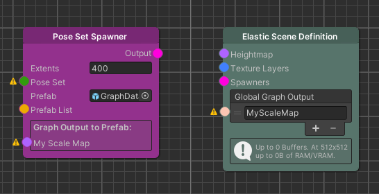
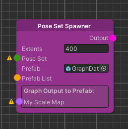
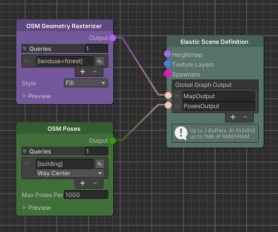

How-To: Access Graph Data
Advanced | 1 hour | Programmers
Introduction
Goal
In this tutorial we learn how we can access node data in scripts from outside the elastic node graph.

Prerequisite
Using the access systems:
- Familiarity with the node graph
- Familiarity with Spawner nodes
- Familiarity with UniTask
- Proficiency in C# scripts
Extending the access systems:
- Knowledge of the Worker system
Learning Path
- Spawning objects with graph data
- Accessing graph data globally
- Writing custom mappers to access data
- Summary
Content
We start by passing data from graphs to spawned prefabs. Afterwards, we learn how we can make data accessible globally. In the end we take a deep dive into how the process of returning data from a node works.
Note
The graph data API of the Elastic SDK uses the UniTask framework to efficiently access available pipeline data. It is important to be familiar with this framework in order to fully understand the code flow and its implications.
Spawning objects with graph data
We start by creating a new C# script and attach it to a prefab in a spawner.
The next step is to let the node graph know that we would like to fill one of our variables with data from the graph.
For this we create a public variable and add the InjectGraphData attribute.
The only missing piece is now the type of the variable. This is the most interesting part, because it describes both the node type that we want to access and the type that it returns. The ElasticSDK currently contains mappings for three output types, but we will later see how we can implement our own mappings and returned types.
These output types are:
FloatValueFromMapProvider.FloatValue
Requiring aMapnode and returning the value of the map at the spawned positionIReadOnlyList<float>
Requiring aMapnode and returning all float values in the mapIReadOnlyList<GlobalPose>
Requiring aPoseSetnode and returning all poses in the connected node
With this knowledge we have everything to build our example:
[InjectGraphData]
public FloatValueFromMapProvider.FloatValue ParkMask;
If we take a look into the graph, after adding this change, we can see the following:

This shows that by simply using this variable type the ElasticSDK knows that we want to access a Map node and creates a port for us where we can plug in a Map node.
What actually happens under the hood is that there are different mappers for the types outlined above. These mappers use the node that they require as an input and access the worker of the node for data to return the data.
One specialty of the workers is that their access queries always contain the position of the prefab to be spawned. The mapper implementation that we used above, which returns a float, uses this position to query the map at this exact spot for a value. The other two return types simply ignore this position and return the full data available.
In case we don't only need to have data ready in our spawned objects but query the world in general we can achieve this with the next approach.
Accessing graph data globally

A different approach to accessing graph data is to use the global graph output of the Elastic Scene Definition node. Here we can simply add and name new input ports to the node as shown above.
With the two nodes connected we can then create a new script and access the node data from there.
using System.Threading;
using Cysharp.Threading.Tasks;
using Holoride.ElasticSDK;
using Holoride.ElasticSDK.Graph;
using UnityEngine;
public class MyMapDependingDynamicScaleScript : MonoBehaviour
{
private CancellationTokenSource CancellationTokenSource;
[SerializeField]
private ElasticSceneGenerator ESG;
[SerializeField]
private string GlobalGraphOutput;
private void OnEnable()
{
CancellationTokenSource = new CancellationTokenSource();
ProcessGraphOutput().Forget();
}
private async UniTaskVoid ProcessGraphOutput()
{
while (!this.CancellationTokenSource.IsCancellationRequested)
{
var position = GlobalPosition.FromShifted(transform.position);
var output = await ESG.TryGetGlobalOutput<FloatValueFromMapProvider.FloatValue>(GlobalGraphOutput, position, CancellationTokenSource.Token);
if (output.success)
{
transform.localScale = Vector3.one * output.result;
}
await UniTask.NextFrame(CancellationTokenSource.Token);
}
}
private void OnDisable()
{
this.CancellationTokenSource?.Cancel();
this.CancellationTokenSource?.Dispose();
}
}
In the script, we first need to get a reference to the Elastic Scene Generator that uses this elastic scene definition.
Now, we can query the current connected nodes using the TryGetGlobalOutput method on the Elastic Scene Generator and
the entered name of the port as the first parameter.
In our example above this could be either MapOutput or PosesOutput. An overload that takes in a second parameter
allows us to pass the position where we want to query the node. While we might be interested in all of the poses that
are currently available for the Map based nodes it is usually useful to sample a certain position.
The GlobalPosition argument that the method requires, can be easily created
using the GlobalPosition.FromShifted(Vector3) method.
Lastly, we need to specify the generic type parameter. The possible types in this case, similar to the spawner example above, are the following:
FloatValueFromMapProvider.FloatValueIReadOnlyList<float>IReadOnlyList<GlobalPose>
It is important to note that not all generic types allow querying a specific position. While options 2 and 3 always return the full map or pose data connected, no matter if a position was passed to the mapper or not, option 1 is different.
Since we can only return a single float value when using FloatValueFromMapProvider.FloatValue there is a way in which
we need to decide which float needs to be picked from the map. When passing a position we can use this to sample the map
at this exact location but when no position is passed we default to returning the first entry in the map.
In case this behavior is not what we want we can create our own mapping behavior, which is what we will do in the next section.
Writing custom mappers to access data
We will now take a look under the hood on how we can create new mappings.
This is done by IWorkerMapperT defines the type of the returned value of this mapper. As we have seen in the previous two chapters, we
use this type when querying the Elastic Scene Generator or defining a variable in a script of a spawned prefabs. After
deciding on a return type, we have to set the SourceNodeType property of the interface to the node we want to work
with. The final step is to implement the mapping behavior between the node and the returned value type.
With this overview over the interface we can use it in an example:
For this example, our goal is to return the closest Pose of a Pose Set node. We create a class
called ClosestPoseMapper and implement the IWorkerMapper<GlobalPose> interface. We chose GlobalPose since we want
to return a Pose from the Pose Set. Small note here: It might make sense to not use existing types as the return type,
but we will have a short discussion at the end of this chapter on this topic.
public class ClosestPoseMapper : IWorkerMapper<GlobalPose>
{
public Type SourceNodeType { get; } = typeof(PoseSetNode);
// [...] Omitted Map methods
}
In the snippet above, we can see the interesting property SourceNodeType that defines the type of the node this mapper
requires. Next, we will see how we can access the data from the worker of the required node and use it to generate the
desired output.
async UniTask<object> IWorkerMapper.Map(IPipelineWorker worker, GlobalPosition position, CancellationToken cancellationToken)
{
return await Map(worker, position, cancellationToken);
}
async UniTask<object> IWorkerMapper.Map(IPipelineWorker worker, CancellationToken cancellationToken)
{
return await Map(worker, cancellationToken);
}
public UniTask<GlobalPose> Map(IPipelineWorker worker, GlobalPosition position, CancellationToken cancellationToken = default)
{
// TODO Implement
}
public UniTask<GlobalPose> Map(IPipelineWorker worker, CancellationToken cancellationToken = default)
{
// TODO Implement
}
The interface includes four map methods that can be split into two main groups. While generally the upper two methods would be sufficient, the lower two map methods are simply type safe variants of the same method. This is why we simply forward the calls of the non type safe variants to the type safe methods.
public UniTask<GlobalPose> Map(IPipelineWorker worker, CancellationToken cancellationToken = default)
{
var poseSetWorker = (PoseSetWorker) worker;
var poses = UniTask.FromResult(poseSetWorker.ReadPoses);
// we don't have a position to compare against
return poses[0];
}
public UniTask<GlobalPose> Map(IPipelineWorker worker, GlobalPosition position, CancellationToken cancellationToken = default)
{
var poseSetWorker = (PoseSetWorker) worker;
var poses = poseSetWorker.ReadPoses;
// order the poses and return the smallest
return UniTask.FromResult(poses.OrderBy(pose => (position - pose.Position).SquaredLength).First());
}
Since we know that we will access the worker of a PoseSetNode, we can cast the incoming pipeline worker to
a PoseSetWorker. We have now access to the ReadPoses property of the worker that stores a readonly list
of GlobalPoses.
The final step is to return a single pose from the list. Since the Map(IPipelineWorker) method doesn't pass a position
we have to a agree on a selection method. For simplicity we can decide on simply returning the first Pose in the list.
The second Map method is more interesting to us, because we sort the Poses and return the Pose that is closest to the
passed position.
The example above is technically complete, but we should consider that we might want to implement other mappers that
return a GlobalPose. This would make it impossible for the system that needs to decide which mapper should be used
since we decide this based on the returned variable.
To sidestep this issue and make it more obvious which mapper is used we can simply create a wrapper class for our returned type. If we make this wrapper class a nested class inside the mapper, then we always see what mapper is used.
We have already seen an example for this pattern: FloatValueFromMapProvider.FloatValue
public class FloatValueFromMapProvider : IWorkerMapper<FloatValueFromMapProvider.FloatValue>
{
// Omitted methods and fields
public struct FloatValue
{
public float Value;
public static implicit operator float(FloatValue val) => val.Value;
public static implicit operator FloatValue(float value) => new FloatValue { Value = value };
public override string ToString() => this.Value.ToString(CultureInfo.InvariantCulture);
}
}
As we can see this is a wrapper around a float. To make it more convenient we implement the operator float
and operator FloatValue to be able to convert to and from a float.
Summary
We have learned in this guide how we can use data from the graph inside C# scripts, either by letting the spawners inject data or by querying the Elastic Scene Definition node.
For more advanced use cases this tutorial also covered, how we can build our own mapper, allowing us to access the data of the node in a different way.

The example above can be a little inspiration on what we can now do with this. If we want to know, whether the spawned prefab is inside a park, we can simply pass this information and alter our gameplay with this piece of information.